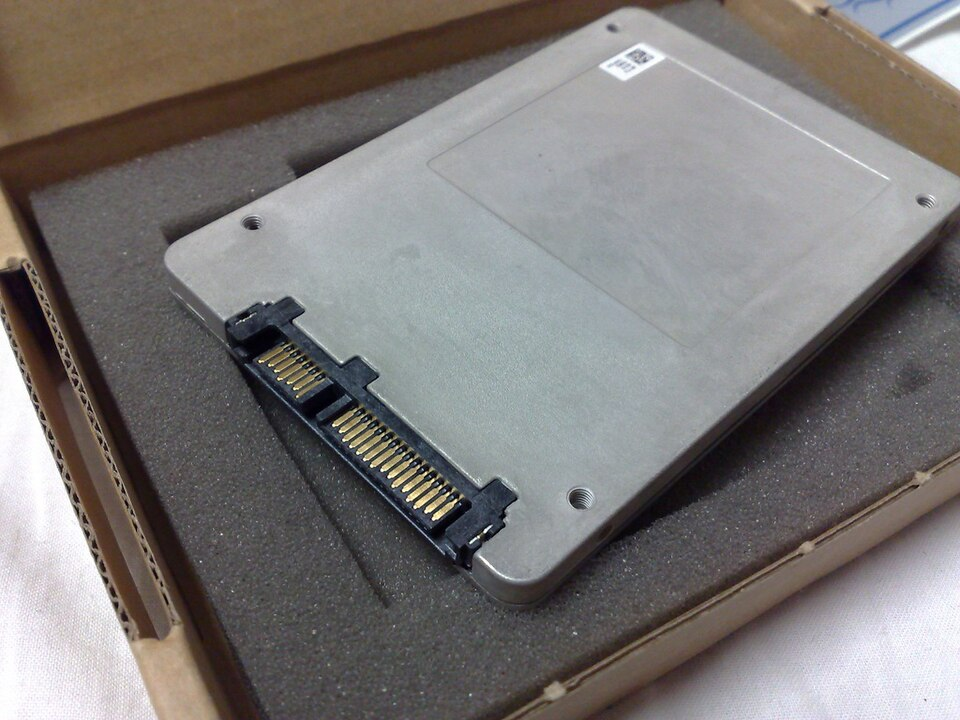

Qualify a used SATA or NVMe SSD without reading files
Identify the drive interface, run read-only health checks on blank training media, and interpret wear, error counters and intermittent detection.
Keep the drive identity and data decision together
Use an owned, blank training SSD for the live exercise. Many donor drives still hold personal data. At intake, record whether the owner retains the drive, authorises a defined check, requests recovery or separately authorises sanitisation. Put unidentified drives aside with their owner and job ID. Leave their file systems unmounted and use a test system configured to keep automatic mounting off. A health report is a technical assessment. Data release and sanitisation require their own decision and evidence.

Photo by Dsimic, scaled for the course. Original photo · CC BY-SA 4.0.


Photo by Kent Madsen (Designermadsen), scaled for the course. Original photo · CC BY-SA 2.0.

Watch. Identify the correct device and locate the health report. For this lab use the report and supplied manual on blank training media. Nick Janetakis on viewing SATA and SSD health reports.
Confirm which connection the drive actually uses
A typical 2.5-inch SATA SSD has separate power and data contacts. M.2 describes a family of physical cards and sockets. An M.2 SSD can use SATA or PCIe/NVMe. Key shape, length and available sockets narrow the options, but the drive and host specifications establish compatibility. A USB enclosure can hide SMART data or tests even if the drive shows up. If practical, prove the model in a compatible native slot or SATA connection on the reference host. Kingston comparison of SATA and M.2 interfaces · T50 SSD health and bad blocks.
Make a read-only health record
Attach the blank training drive under the model’s documented powered-down procedure. Identify the correct model and capacity in a known-good host. Separately note if the controller is visible but its namespace or usable capacity is missing. Leave the drive unmounted for the lab.
On a Linux lab host with smartmontools, use the scanner to identify the path and then request the drive’s health reports. An example path is shown. Substitute only after verifying the model and capacity against the unit you connected. A SATA path might be
/dev/sdbinstead. This is an information query. smartctl manual.sudo smartctl --scan-open sudo smartctl -a /dev/nvme0Record interface, capacity, temperature, critical warnings, wear, errors and whether a previous self-test result is available. When the exact model supports it and data is already safe, run its documented non-destructive self-test on your blank practice drive. That test may read the device internally and take time. If a drive drops offline or an important drive has signs of failure, stop further stress tests and choose the data recovery path. A missing report through an enclosure does not establish drive failure.
Use two observations before a release decision
| Observed health report | Independent check | Action |
|---|---|---|
| Correct size and no critical warning through native connection. USB bridge reports health unavailable. | Compare the exact drive on the native host and on a documented compatible adapter. | Check bridge support before marking the drive faulty. |
| SATA interface CRC count increases on one connection. | Retest with a known-good SATA lead and port. Compare changes, not just the lifetime count. | Check link integrity before assigning failure to flash. Attribute meanings are vendor-specific. |
| NVMe critical warning set or unrecovered media error count rises. | Record the new values and the device’s model manual. Keep valuable data out of further testing. | Hold from sale. If customer data is on the drive, follow the agreed recovery path. |
| Drive disappears on two supported hosts, while the reference drive remains stable. | Compare connection, cooling and power conditions. Record the time and symptoms. | Hold from sale as unreliable. Board repair may be worthwhile only for a defined recovery job. |
Save the actual model, test path, two readings, and result of any authorised self-test. Keep part qualification and data handling separate in the record. A SMART pass provides evidence for return to service together with stable detection and use, and cannot guarantee future health.